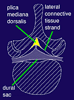

|
 AXIAL VIEW THROUGH A LUMBAR VERTEBRA Typical appearance of the plica mediana dorsalis proposed by Savolaine et al. (3) The plica and connective tissue membranes divide the posterior epidural space into lateral halves as well as anterior and posterior compartments. |